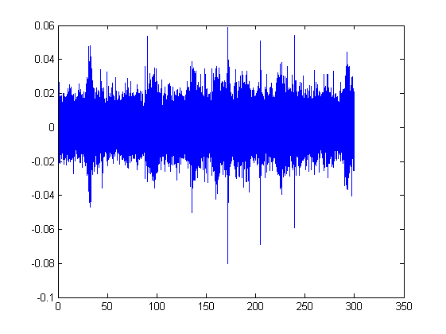

soundFolder - a toolbox for reading timestamped audio files
Brian Miller, Australian Antarctic Division, 2016
SoundFolder is a Matlab package for reading acoustic data from folders of timestamped audio files. Timestamped audio files are often used in bioacoustic field recordings, where the timestamp is either embedded in the file's name (e.g. 2020-01-01_123456.wav), or is included as a part of the file metadata (e.g. embedded in the header of a WAV file, or as tags in MP3 files).
SoundFolder was originally created to facilitate reading the wav audio at user-specified dates and times without having to manually keep track of file names and timestamps. It is especially useful for reading audio from detections that were created by Pamguard (http://www.pamguard.org), since Pamguard detections include the time, channel number, and duration of each detection, but do not necessarily (or typically) include the name of the audio file. SoundFolder provides a simple means to load the audio data from these detections by providing as input the start date & time, duration of audio desired, channel number, and the folder where the timestamped wav files are stored, hence the name soundFolder.
Contents
Usage:
The main functions in the soundFolder are getWavFolderInfo and getAudioFromFiles.
First, we setup a new soundFolder:
Create a soundFolder and load recording metadata
folder = 'S:\annotatedLibrary\kerguelen2014\wav\'; fileTimeStampFormat = 'yyyy-mm-dd_HH-MM-SS'; sf = wavFolderInfo(folder,fileTimeStampFormat);
Load audio by date and time
startTime = datenum([2014 03 01 12 25 00]);
endTime = startTime + 300/86400; % 5-minutes duration (in days/as a datenum);
[audio, weighting, fileInfo] = getAudioFromFiles(sf,startTime,endTime);
Make a spectrogram of the audio
spectrogram(audio,1024,960,1024,fileInfo.sampleRate,'yaxis'); ylim([0 100]) caxis([-65 -40]) colormap(flipud(gray))
t = (0:length(audio)-1)/fileInfo.sampleRate; plot(t,audio)